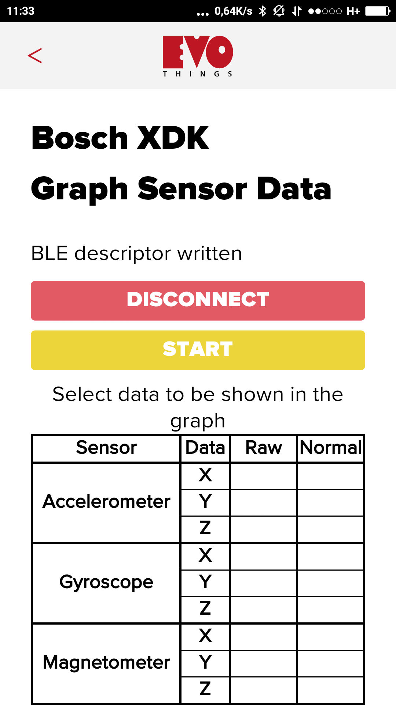
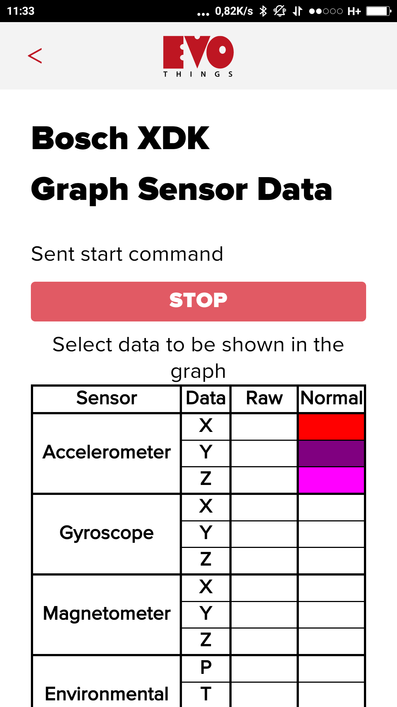
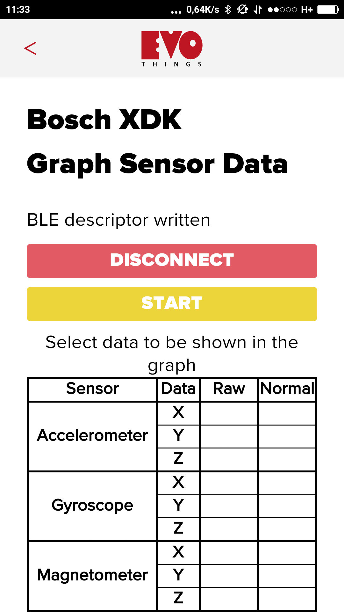
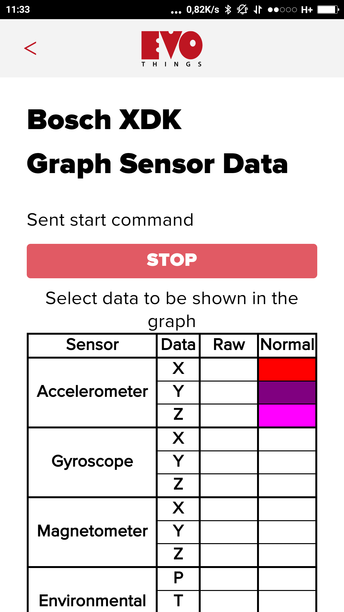
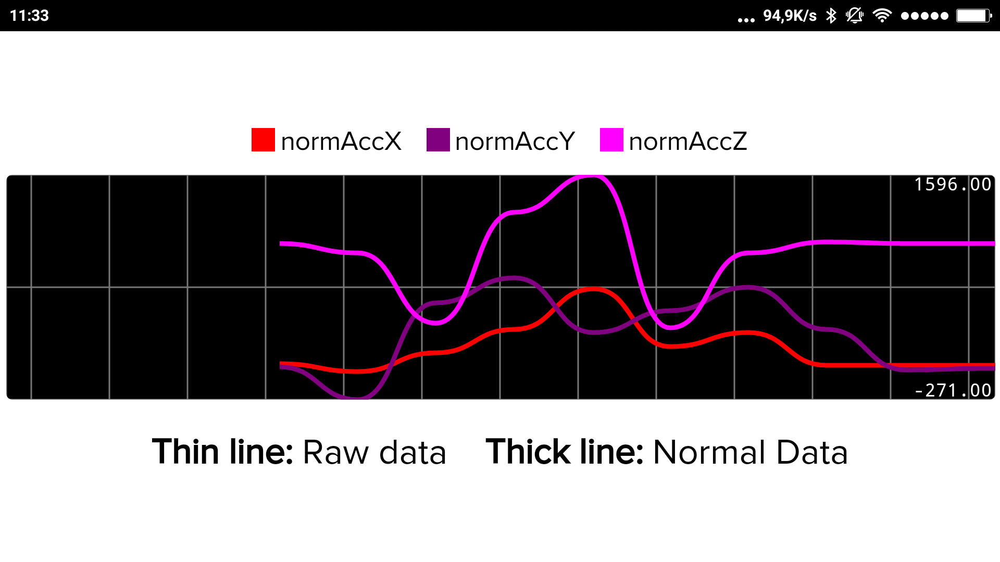
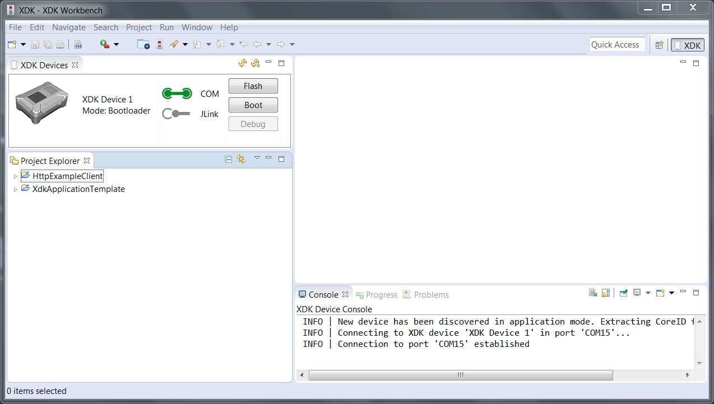
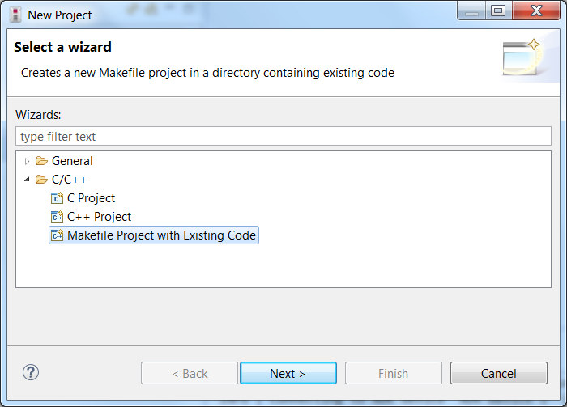
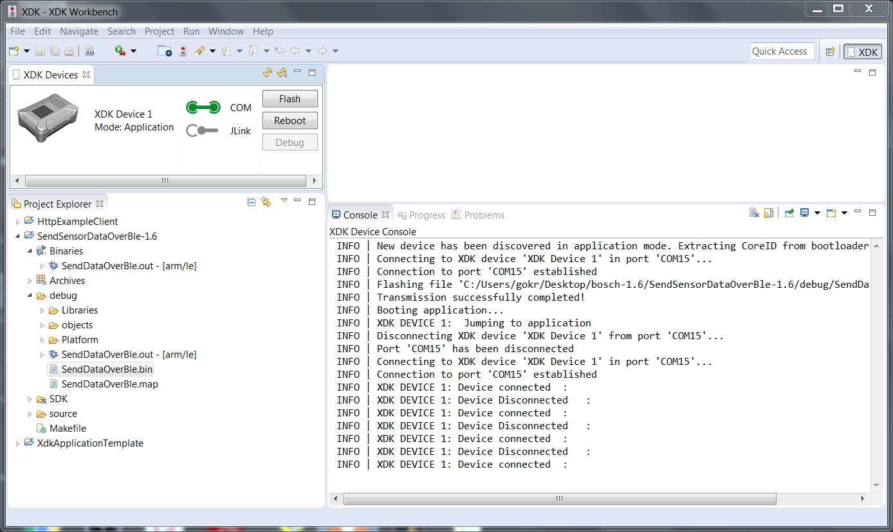

Bosch XDK Sensors Graph
Sample application for the Bosch XDK device that shows sensor data in real time in a visual graph. The data is gathered by the XDK device and transferred over Bluetooth Low Energy to the application running on the smartphone. The app displays the data in a live graph.
The following screenshots show how the app looks like initially, when it's connected, and when it's started and tilted showing sensor data.
 



Showing accelerometer data while shaking the XDK device:
Showing light sensor, the dip is when I covered the device with my hand:

Source code
You can browse the source code for this example at github.
The file index.html contains the HTML markup of the app and the app.js contains the logic.
What you need
This example runs in the Evothings Viewer on Android or iOS.
Yoyu need an iOS device or an Android device with support for Bluetooth 4.0 (which includes BLE). For Android version 4.3 or later is needed.
Obviously you need an XDK device from a retail distributor.
In order to be able to build and flash the device with the device side code, you also need to download and install the XDK Workbench 1.6.0 which is available for Windows 7 and later (not Linux or OSX).
How to get up and running
Bosch has made available several guides on how to install and get started with the Eclipse based XDK Workbench. However, below you find the specific steps you need to just get the firmware built and flashed:
- Download and install the XDK Workbench. It needs to be version 1.6.0 or possibly newer. It's an easy installer. Then follow guide below to build and flash the firmware.
- Run Evothings Studio on your computer and connect your Evothings Viewer on your phone to it.
- Press Run on the Bosch XDK Sensors Graph example in the Studio, either directly from the Examples tab or from your own copy under myApps.
- Make sure the XDK is on and has power with the green light on (and you flashed it as described below).
- Press Connect in the mobile app, and then eventually after it has connected - select the sensors to include in the graph - and press Start. Then hold the screen in landscape mode to see the graph -- you should see something like the last two screenshots above..
Build and flash firmware
Use the Copy button on the Bosch Sensors example in the Examples tab in Evothings Studio, to get your own copy of the code.
Fire up the XDK IDE and connect the XDK device using a USB cord. Turn it on. Hopefully it will be discovered (I failed first due to a faulty cord) and then you will get the green icon and the "Flash" and "Boot" buttons appear, something like this:
Then you select "New Project" from the IDE, and then under "C/C++", pick "Makefile Project with Existing Code":
Find the xdk-firmware directory and import the code.
Now you should be able to build and flash your XDK device, either using the "Flash" button or by first building, producing a .bin file under the debug directory, and then flashing that file. Log should show something similar to this:
Success!